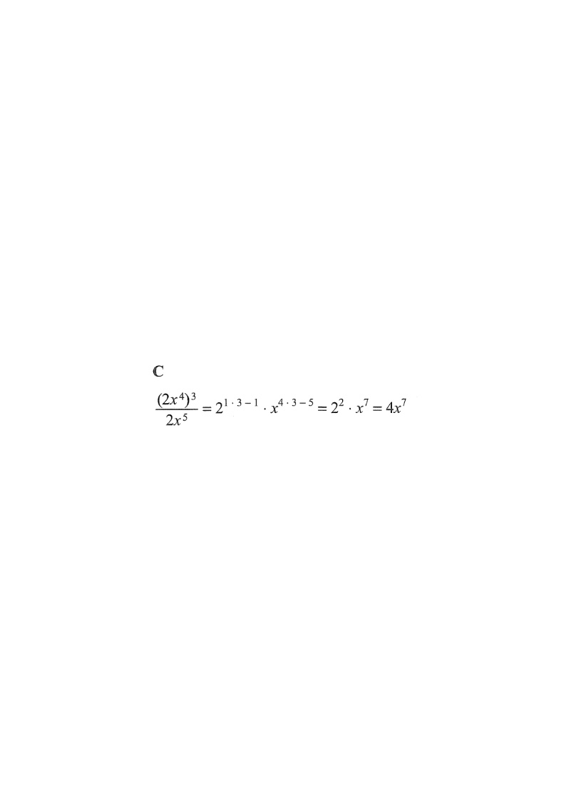

[2012MC#1]
Simplify: $\dfrac{(2x^4)^3}{2x^5} = $
A. $3x^2$
B. $3x^7$
C. $4x^7$
D. $4x^{59}$

Figure (original exam diagram)
1 Write down the expression
$$\frac{(2x^4)^3}{2x^5}$$
Identify the two parts: a power of a product in the numerator, and a simple denominator $2x^5$.
2 Power of a product: $(ab)^n = a^n b^n$
$$(2x^4)^3 = 2^3 \cdot (x^4)^3 = 2^3 x^{12}$$
Raise both the coefficient 2 and the variable $x$ to the power 3. Remember $(x^4)^3 = x^{4\times 3}$.
Power of a Product
\((ab)^{n}=a^{n}b^{n}\)
Raise every factor inside the bracket to the power: \(2^{3}\) and \((x^{4})^{3}\).
Power of a Power
\((a^{m})^{n}=a^{mn}\)
Multiply the indices: \((x^{4})^{3}=x^{4\times3}=x^{12}\).
3 Rewrite the whole expression
$$\frac{2^3 x^{12}}{2^{1} x^{5}} = \frac{2^3}{2^1}\cdot\frac{x^{12}}{x^{5}}$$
Group the number part and the $x$ part separately — this makes the index laws easier to apply.
4 Apply the index laws
$$\frac{a^m}{a^n} = a^{m-n}$$
$$\frac{2^3}{2^{1}} = 2^{3-1} = 2^{2}, \qquad \frac{x^{12}}{x^{5}} = x^{12-5} = x^{7}$$
When dividing powers with the same base, subtract the indices. Do this for $2$ and for $x$ separately.
Quotient Law of Indices
\(\dfrac{a^{m}}{a^{n}}=a^{m-n}\quad(a\neq0)\)
Same base, dividing: subtract the indices; apply it separately to base \(2\) and base \(x\).
5 Multiply back together
$$2^{2}\,x^{7} = 4x^{7}$$
Simplify $2^2 = 4$ and combine: the coefficient and the variable power.
Answer: C — $\dfrac{(2x^4)^3}{2x^5} = 4x^{7}$
PRACTICE Similar question — try it yourself
Question. Simplify \(\dfrac{(3x^{2})^{4}}{3x^{3}}\).
Show the worked solution
Step 1. Power of a product and power of a power: \((3x^{2})^{4}=3^{4}(x^{2})^{4}=81x^{8}\).
Step 2. Write the denominator as \(3^{1}x^{3}\) and group bases: \(\dfrac{81x^{8}}{3x^{3}}=\dfrac{81}{3}\cdot\dfrac{x^{8}}{x^{3}}\).
Step 3. Quotient law: \(\dfrac{81}{3}=3^{4-1}=27\) and \(\dfrac{x^{8}}{x^{3}}=x^{8-3}=x^{5}\).
Step 4. Hence the expression is \(27x^{5}\).
Answer: \(27x^{5}\)